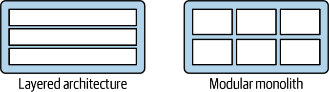
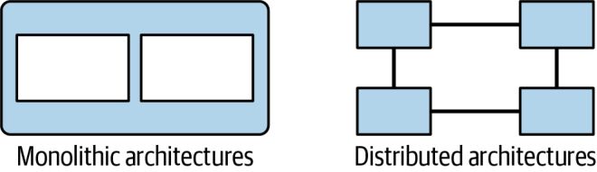
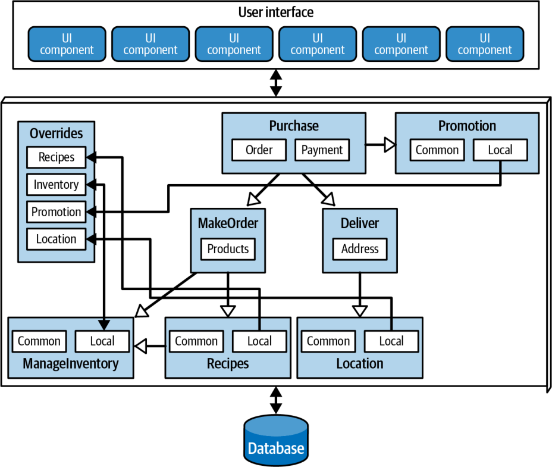
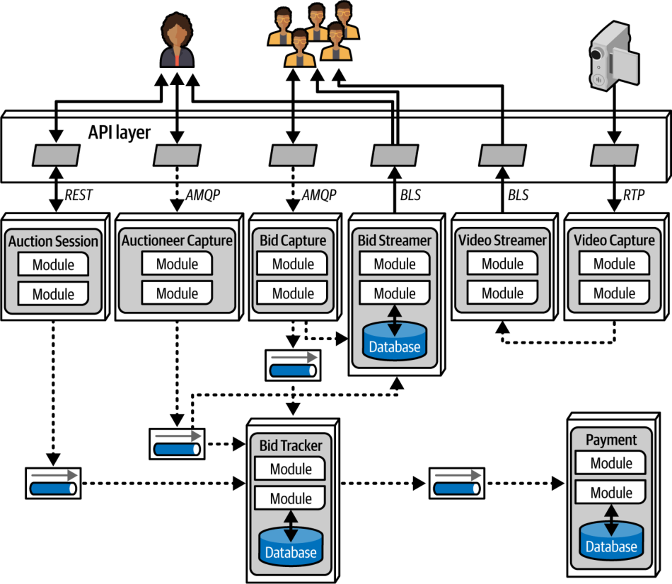
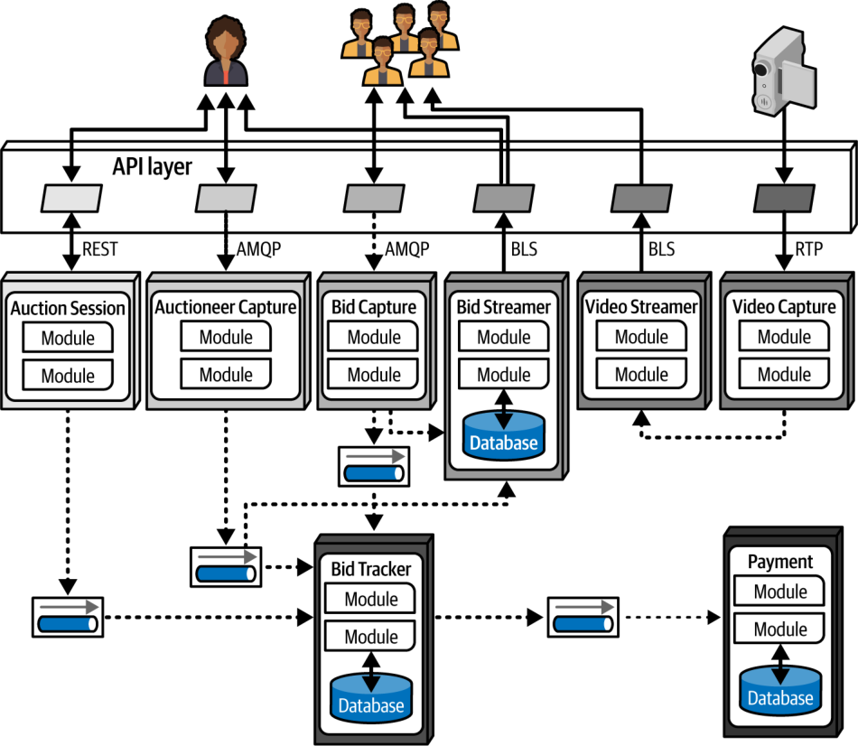

بستگی دارد! با این همه گزینهٔ در دسترس (و گزینههای تازهای که تقریباً هر روز از راه میرسند)، دوست داشتیم به شما بگوییم از کدام سبک معماری استفاده کنید، اما نمیتوانیم. هیچ چیز به اندازهٔ این تصمیم به عوامل متعددِ درون یک سازمان و نوع نرمافزاری که میسازد وابسته نیست. انتخاب یک سبک معماری نقطهٔ اوجِ یک فرایند کامل از تحلیل و اندیشیدن دربارهٔ مصالحههای ویژگیهای معماری، ملاحظات حوزه، اهداف راهبردی و انبوهی از عوامل دیگر است. به همین دلیل است که، همانطور که در فصل ۲ گفتیم، «بستگی دارد».
این تصمیم هرقدر هم به زمینه وابسته باشد، این فصل توصیههایی کلی دربارهٔ انتخاب سبک معماری مناسب ارائه میکند.
تغییر «مُد» در معماری
ترجیحات صنعت نرمافزار در سبکهای معماری با گذر زمان، و تحت تأثیر عوامل گوناگون، تغییر میکند. این عوامل عبارتاند از:
مشاهدههای گذشته (Observations from the past): سبکهای معماری تازه معمولاً از مشاهدههایی دربارهٔ تجربههای گذشته، بهویژه مشاهدههایی دربارهٔ نقاط درد (pain points)، سر برمیآورند. تجربههای معماران در کار با سیستمها (که اغلب همان چیزی است که در وهلهٔ نخست ما را به معمار شدن سوق میدهد) بر اندیشههایمان دربارهٔ سیستمهای آینده اثر میگذارد. طراحیهای معماریِ تازه اغلب بازتاب راهحلهایی برای کاستیهای مشخصی هستند که در سبکهای معماریِ گذشته با آنها روبهرو شدهایم. برای مثال، معماران پس از ساختنِ معماریهایی که بر بازاستفادهٔ کد متمرکز بودند، به مصالحههای منفیِ آن پی بردند و پیامدهای بازاستفادهٔ کد را بهطور جدی از نو سنجیدند.
تغییرات در اکوسیستم (Changes in the ecosystem): در اکوسیستم توسعهٔ نرمافزار، همهچیز همواره در حال تغییر است. این تغییر مداوم آنقدر آشفته است که حتی پیشبینیِ نوع تغییر بعدی هم ناممکن است. چندان سالهایی از زمانی نگذشته که هیچکس نمیدانست Kubernetes چیست، و اکنون بخشی از زندگی روزمرهٔ بسیاری از توسعهدهندگان است. چند سال دیگر، ممکن است ابزار دیگری که هنوز نوشته نشده جای Kubernetes را بگیرد.
قابلیتهای تازه (New capabilities): معماران باید نهفقط ابزارهای تازه، بلکه پارادایمهای (paradigms) تازه را نیز با دقت زیر نظر داشته باشند. وقتی قابلیتهای تازه پدید میآیند، معماری ممکن است بهجای جایگزینکردنِ صرفِ یک ابزار با ابزاری دیگر، به پارادایمی یکسره تازه منتقل شود. برای مثال، کمتر کسی جابهجاییِ زمینلرزهواری را پیشبینی میکرد که ظهور کانتینرهایی مانند Docker در دنیای توسعهٔ نرمافزار پدید آورد. هرچند این یک گام تکاملی بود، اثری شگفتانگیز بر معماران، ابزارها، شیوههای مهندسی و بسیاری چیزهای دیگر گذاشت. تغییر مداوم در اکوسیستم همچنین بهطور منظم ابزارها و قابلیتهای تازهای به ارمغان میآورد. حتی چیزی که به نظر میرسد صرفاً نسخهٔ دیگری از چیزی است که از قبل داریم، ممکن است ظرافتهایی داشته باشد که آن را به تغییردهندهٔ بازی (game changer) تبدیل کند. قابلیتهای تازه حتی لازم نیست کل دنیای توسعه را تکان دهند: تغییری جزئی که دقیقاً با اهداف یک معمار همراستا باشد، میتواند همهچیز را دگرگون کند.
شتاب (Acceleration): اکوسیستم نهتنها پیوسته تغییر میکند، بلکه تغییر نیز پیوسته سریعتر و فراگیرتر میشود. ابزارهای تازه شیوههای مهندسیِ تازهای پدید میآورند که به طراحیها و قابلیتهای تازه میانجامند و معماران نرمافزار را در وضعیتی از دگرگونی دائمی نگه میدارند. ظهور و نفوذ هوش مصنوعی مولد (generative AI) نمونهٔ برجستهای از این تکامل مداوم و پیشبینیناپذیریِ همراه آن است.
تغییرات حوزه (Domain changes): حوزههایی که برایشان نرمافزار مینویسیم، همگام با تکامل کسبوکارها یا ادغامشان با شرکتهای دیگر، پیوسته جابهجا میشوند و تغییر میکنند.
تغییرات فناوری (Technology changes): سازمانها میکوشند دستکم با برخی از تغییرات فناوری همگام شوند؛ بهویژه تغییراتی که سود آشکاری در نتیجهٔ نهاییِ مالی دارند.
عوامل بیرونی (External factors): عوامل بیرونیِ بسیاری که تنها پیوندی حاشیهای با توسعهٔ نرمافزار دارند، میتوانند تغییر را در سازمان رقم بزنند. برای مثال، ممکن است معماران و توسعهدهندگان از ابزاری مشخص کاملاً راضی باشند، اما اگر هزینهٔ مجوز آن بازدارنده شود، کسبوکار ممکن است ناچار شود به گزینهٔ دیگری مهاجرت کند.
معماران، صرفنظر از اینکه سازمانشان تا چه حد از مُد روز معماری پیروی میکند، باید روندهای کنونیِ صنعت (industry trends) را بشناسند تا بتوانند هوشمندانه تصمیم بگیرند از کدام روندها پیروی کنند و چه زمانی استثنا قائل شوند.
معیارهای تصمیمگیری
معماران هنگام انتخاب یک سبک معماری باید همهٔ عوامل گوناگونی را که در ساختار طراحیِ حوزه سهم دارند در نظر بگیرند. در اصل، معمار دو چیز را طراحی میکند: حوزهای که مشخص شده است، هرچه باشد، و عناصر ساختاریای که برای موفقیت سیستم لازماند (و ویژگیهای معماری آنها را فراهم میکنند).
تنها زمانی سراغ انتخاب سبک معماری بروید که دربارهٔ عوامل زیر دانش کافی داشته باشید:
حوزه (The domain): تا جایی که میتوانید جنبههای مهم حوزهٔ کسبوکار را بشناسید؛ بهویژه جنبههایی که بر ویژگیهای عملیاتی معماری (operational architecture characteristics) اثر میگذارند. لازم نیست معماران متخصص موضوعی (subject matter experts) باشند، اما دستکم باید درک کلیِ خوبی از جنبههای اصلی حوزهٔ در دست طراحی داشته باشند. متخصصان دیگری، مانند تحلیلگران کسبوکار (business analysts)، میتوانند به شما کمک کنند شکافهای دانش حوزهای خود را پر کنید.
ویژگیهای معماریای که بر تصمیمهای ساختاری اثر میگذارند (Architecture characteristics that impact structural decisions): با انجام یک تحلیل ویژگیهای معماری (architectural characteristics analysis)، که یکی از فعالیتهای اصلی در انتخاب سبک است، مشخص و روشن کنید که کدام ویژگیهای معماری برای پشتیبانی از حوزه و دیگر عوامل بیرونی لازماند.
پیادهسازیِ هر یک از سبکهای معماریِ عام (generic architecture styles) تقریباً در هر حوزهٔ مسئلهای ممکن است؛ هرچه باشد، عام بودن یعنی همهمنظوره بودن. استثنا، حوزههایی هستند که به ویژگیهای عملیاتیِ معماریِ ویژهای نیاز دارند؛ مانند یک سایت حراج با مقیاسپذیریِ بسیار بالا. با این حال، در بیشتر موارد، تفاوتهای واقعیِ سبکهای معماری نه به حوزه، بلکه به این مربوط است که هر سبک تا چه حد از ویژگیهای معماریِ گوناگون پشتیبانی میکند.
شاید متوجه شده باشید که نمودارهای ستارهای (star charts) که در بخش دوم این کتاب برای مقایسهٔ سبکهای معماری به کار بردیم، بر ویژگیهای معماری تمرکز دارند، نه بر حوزهها. این امر نشاندهندهٔ اهمیت شناخت ویژگیهای معماری در انتخاب سبک است.
معماری داده (Data architecture): معماران و توسعهدهندگان داده باید در زمینهٔ پایگاهدادهها، طرحوارهها و دیگر دغدغههای مرتبط با داده با هم همکاری کنند. معماری داده تخصصی مستقل است و در این کتاب، جز ملاحظاتِ ویژهٔ هر سبک، چندان به آن نمیپردازیم. با این حال، باید اثری را که یک طراحی دادهٔ مشخص ممکن است بر طراحی معماریتان بگذارد بشناسید؛ بهویژه اگر سیستم جدید ناچار باشد با یک معماری دادهٔ قدیمیتر یا معماری دادهای که در حال حاضر در حال استفاده است تعامل کند.
استقرارهای ابری (Cloud deployments): استفاده از ابر بهعنوان مقصد معماری (architectural destination) تازهترین حلقه از زنجیرهٔ درازِ جابهجاییهای بنیادین در محل قرارگیریِ محاسبات و دادههاست. مصالحههای طراحیِ یک برنامهٔ کاربردی برای اجرا بهصورت درونسازمانی با مصالحههای طراحیِ آن برای ابر کاملاً متفاوت است. در کنار انبوهی از دغدغههای دیگر، مهم است بدانید برنامهٔ کاربردی چه مقدار داده باید ذخیره کند و چه مقدار داده ممکن است جابهجا شود (که میتواند هزینههای چشمگیری در پی داشته باشد).
ابر نمونهٔ بسیار خوبی است از اینکه قابلیتهای پیشرفته چگونه با گذر زمان به کالاهای همگانی (commodities) تبدیل میشوند. یک دهه پیش، ساختنِ یک سیستم درونسازمانیِ بسیار کشسان و مقیاسپذیر به مهارتهایی کمیاب و تخصصی نیاز داشت و کاری تقریباً جادویی به شمار میآمد. اکنون معماران میتوانند صرفاً با تغییر پارامترهای پیکربندیِ ارائهدهندهٔ ابر (cloud provider) خود به همان نتایج دست یابند.
عوامل سازمانی (Organizational factors): عوامل بیرونیِ بسیاری بر طراحی اثر میگذارند. برای مثال، هزینهٔ یک فروشندهٔ ابری مشخص ممکن است کسبوکار را از پذیرفتنِ طراحیای که در غیر این صورت آرمانی میبود باز دارد. به همین ترتیب، آگاهی از اینکه شرکت قصد دارد وارد ادغام و تملک (mergers and acquisitions) شود، ممکن است معمار را به سوی راهحلهای باز و معماریهای یکپارچهسازی (integration architectures) سوق دهد.
شناخت فرایند، تیمها و دغدغههای عملیاتی (Knowledge of process, teams, and operational concerns): عوامل مشخصِ بسیاری در پروژه بر طراحیهای معماران اثر میگذارند: فرایند توسعهٔ نرمافزار، تعامل (یا نبودِ تعامل) معمار با تیم عملیات، و فرایند تضمین کیفیت (QA). برای مثال، اگر سازمانی در شیوههای مهندسیِ Agile بلوغ کافی نداشته باشد، سبکهای معماریای که موفقیتشان به این شیوهها وابسته است (مانند میکروسرویسها) با دشواری روبهرو خواهند شد.
همریختیِ حوزه و معماری (Domain/architecture isomorphism): همریختیِ معماری (architecture isomorphism) اصطلاحی پرطمطراق برای «شکل» عامِ یک معماری است؛ به بیان دیگر، شیوهای که مؤلفههایش درون توپولوژی کلی به یکدیگر وابستهاند. واژهٔ همریختی (isomorphism) به معنای «نگاشتی است که مجموعهها و روابط میان عناصر را حفظ میکند»؛ این واژه از دو واژهٔ یونانیِ isos به معنای «برابر» و morph به معنای «فرم» یا «شکل» گرفته شده است.
معماران هنگام سنجیدنِ میزان تناسب یک معماری، به شکل عام آن میاندیشند. برای مثال، تفاوتهای دو نمودار همریختیِ معماری را برای سبکهای معماری لایهای (layered) و تکپارچهٔ ماژولار (modular monolith) در شکل ۱۹-۱ در نظر بگیرید. شکل درونی هر معماری آشکار است: جداسازی بر پایهٔ لایهها در برابر جداسازی بر پایهٔ حوزهها.

شکل ۱۹-۱. مقایسهٔ بازنماییهای همریختِ تکپارچههای لایهای و ماژولار
تفاوت میان معماری تکپارچه و توزیعشده نیز، چنانکه در شکل ۱۹-۲ نشان داده شده، از نمودارهای همریخت به همین روشنی پیداست. در اینجا، توزیع مؤلفههای اصلی ساختار کلان معماری را آشکار میکند.

شکل ۱۹-۲. مقایسهٔ بازنماییهای همریختِ سبکهای معماری تکپارچه و توزیعشده
برخی حوزههای مسئله با توپولوژی معماری جور درمیآیند. برای نمونه، سبک معماری میکروکرنل (microkernel) برای سیستمهایی که به سفارشیپذیری (customizability) نیاز دارند کاملاً مناسب است؛ معمار میتواند سفارشیسازیها را به شکل افزونهها (plug-ins) طراحی کند. نمونهٔ دیگر، سیستمی است که برای تحلیل ژنوم طراحی شده و به شمار زیادی عملیات گسسته نیاز دارد؛ چنین سیستمی ممکن است با معماری مبتنی بر فضا، که شمار زیادی پردازندهٔ گسسته فراهم میکند، تناسب خوبی داشته باشد.
به همین ترتیب، برخی حوزههای مسئله ممکن است بهویژه با برخی سبکهای معماری ناسازگار باشند. سیستمهای بسیار مقیاسپذیر با طراحیهای تکپارچهٔ بزرگ مشکل دارند، زیرا پشتیبانی از شمار زیادی کاربر همزمان (concurrent users) برای یک کدپایهٔ بهشدت کوپلشده دشوار است. حوزهٔ مسئلهای که حجم عظیمی کوپلینگ معنایی (semantic coupling) دارد، با یک معماری توزیعشده و بهشدت جداشده تناسب ضعیفی خواهد داشت: برای نمونه، یک برنامهٔ کاربردی بیمه که از فرمهای چندصفحهای تشکیل شده و هر صفحهاش بر پایهٔ زمینهٔ صفحههای پیشین است، مسئلهای بهشدت کوپلشده است. مدلکردنِ چنین مسئلهای در یک معماری جداشده مانند میکروسرویسها دشوار خواهد بود. یک معماری که عامدانه کوپلشده است، مانند معماری مبتنی بر سرویس، برای این مسئله مناسبتر است.
با در نظر گرفتن همهٔ این موارد، باید در انتخاب سبک معماری چند تصمیم بگیرید:
تکپارچه یا توزیعشده؟ (Monolith versus distributed?) آیا یک مجموعهٔ واحد از ویژگیهای معماری برای طراحی کافی است، یا بخشهای مختلف سیستم به ویژگیهای معماریِ متفاوتی نیاز دارند؟ یک مجموعهٔ واحد نشان میدهد که معماری تکپارچه مناسب است (هرچند عوامل دیگر ممکن است معماری توزیعشده را پیشنهاد کنند)؛ مجموعههای متفاوتی از ویژگیهای معماری بر معماری توزیعشده دلالت دارند. مفهوم کوانتوم معماری (architecture quantum؛ فصل ۷) در این تصمیمگیری سودمند است.
داده کجا باید قرار گیرد؟ (Where should data live?) اگر معماری تکپارچه باشد، معماران معمولاً فرض میکنند که از یک پایگاهدادهٔ رابطهایِ واحد، یا شاید چند پایگاهداده، استفاده خواهد کرد. در یک معماری توزیعشده، باید تصمیم بگیرید کدام سرویسها داده را ماندگار کنند؛ و این یعنی باید به این هم بیندیشید که داده برای ساختنِ گردشکارها چگونه در معماری جریان خواهد یافت. هنگام طراحی معماری، هم ساختار و هم رفتار را در نظر بگیرید و از تکرار و بازنگریِ طراحی خود برای یافتن ترکیبهای بهتر نهراسید.
آیا سرویسها باید بهصورت همگام ارتباط برقرار کنند یا ناهمگام؟ (Should services communicate synchronously or asynchronously?) پس از آنکه تعیین کردید داده کجا باید قرار گیرد، ملاحظهٔ بعدی در طراحی، ارتباط میان سرویسهاست: همگام باشد یا ناهمگام؟ ارتباط همگام اغلب راحتتر است، اما ممکن است به معنای کوتاه آمدن از مقیاسپذیری، قابلیت اطمینان (reliability) و دیگر ویژگیهای مطلوب باشد. ارتباط ناهمگام میتواند از نظر کارایی و مقیاس مزایای منحصربهفردی فراهم کند، اما دردسرهای فراوانی هم در زمینهٔ همگامسازیِ داده (data synchronization)، بنبستها (deadlocks)، شرایط رقابتی (race conditions)، اشکالزدایی (debugging) و مانند آن به همراه دارد. (بسیاری از این مسائل را در فصل ۱۵ بررسی کردهایم.)
از آنجا که ارتباط همگام چالشهای کمتری در طراحی، پیادهسازی و اشکالزدایی دارد، توصیه میکنیم تا جایی که ممکن است ارتباط همگام را گزینهٔ پیشفرض بگیرید و تنها در صورت ضرورت از ارتباط ناهمگام استفاده کنید.
خروجی این فرایند طراحی، یک توپولوژی معماری (architecture topology) است که این موارد را در بر میگیرد: سبک معماریِ برگزیده (و هر گونه ترکیب سبکها)، سوابق تصمیم معماری (Architectural Decision Records یا ADR) دربارهٔ بخشهایی از طراحی که بیشترین تلاش را میطلبند، و توابع برازش معماری (architecture fitness functions) برای محافظت از اصول مهم و ویژگیهای عملیاتی معماری.
مطالعهٔ موردی تکپارچه: Silicon Sandwiches
در کاتای معماری (architecture kata) Silicon Sandwiches در فصل ۵، پس از تحلیل ویژگیهای معماری، به این نتیجه رسیدیم که یک کوانتوم واحد برای پیادهسازیِ سیستم کافی است. از آنجا که با یک برنامهٔ کاربردیِ ساده و بدون بودجهٔ کلان سروکار داشتیم، سادگیِ یک معماری تکپارچه جذاب بود.
با این حال، برای Silicon Sandwiches دو طراحیِ مؤلفهایِ متفاوت ارائه کردیم: یکی با افراز حوزهای و دیگری با افراز فنی؛ اگر به یادآوری نیاز دارید، شاید بخواهید به فصل ۵ برگردید. در این فصل، به آن راهحلهای ساده بازمیگردیم تا برای هر گزینه طراحیای بسازیم و مصالحههایشان را بررسی کنیم. با یک معماری تکپارچه آغاز میکنیم.
تکپارچهٔ ماژولار
تکپارچهٔ ماژولار مؤلفههایی حوزهمحور با یک پایگاهدادهٔ واحد میسازد که به شکل یک کوانتوم واحد مستقر میشوند؛ طراحیِ تکپارچهٔ ماژولار برای Silicon Sandwiches در شکل ۱۹-۳ آمده است.
این یک معماری تکپارچه با یک پایگاهدادهٔ رابطهایِ واحد است که برای پایین نگهداشتنِ هزینهٔ کلی، با یک رابط کاربریِ تحت وبِ واحد (با ملاحظات طراحیِ دقیق برای دستگاههای همراه) پیادهسازی شده است. هر یک از حوزههایی که شناسایی کردیم به شکل یک مؤلفه ظاهر میشود. اگر زمان و منابع کافی باشد، جداسازیِ جدولها و دیگر داراییهای پایگاهداده را به همان شیوهٔ مؤلفههای حوزه در نظر بگیرید؛ این کار مهاجرت این معماری به یک معماری توزیعشده را، اگر نیازمندیهای آینده چنین ایجاب کند، بسیار آسانتر میکند.

شکل ۱۹-۳. پیادهسازیِ Silicon Sandwiches با تکپارچهٔ ماژولار
از آنجا که خودِ این سبک معماری بهطور ذاتی از سفارشیسازی پشتیبانی نمیکند، این قابلیت باید بخشی از طراحی حوزه شود. در این مورد، معمار یک نقطهٔ پایانیِ Override طراحی میکند که توسعهدهندگان میتوانند سفارشیسازیهای جداگانه را در آن بارگذاری کنند. به همین ترتیب، معمار باید اطمینان حاصل کند که هر مؤلفهٔ حوزه برای هر ویژگیِ سفارشیپذیر به مؤلفهٔ Override ارجاع میدهد. (بررسیِ این موضوع کاری عالی برای یک تابع برازش معماری است.)
میکروکرنل
یکی از ویژگیهای معماریای که در Silicon Sandwiches شناسایی کردیم سفارشیپذیری بود. شکل ۱۹-۴ با بهرهگیری از همریختیِ حوزه و معماری نشان میدهد که چگونه میتوان این ویژگی را با یک معماری میکروکرنل پیادهسازی کرد.
شکل ۱۹-۴. پیادهسازیِ Silicon Sandwiches با میکروکرنل
در شکل ۱۹-۴، سیستم هسته (core system) از مؤلفههای حوزه و یک پایگاهدادهٔ رابطهایِ واحد تشکیل شده است. همانند طراحیِ تکپارچهٔ ماژولار، همگامسازیِ دقیق میان حوزهها و طراحی داده، مهاجرت هسته به یک معماری توزیعشده را در آینده تسهیل میکند. هر سفارشیسازی در یک افزونه ظاهر میشود؛ سفارشیسازیهای رایج در یک مجموعهٔ واحد از افزونهها (با یک پایگاهدادهٔ متناظر) قرار میگیرند و مجموعهای از سفارشیسازیهای محلی نیز وجود دارد که هر کدام دادهٔ خودش را دارد. از آنجا که هیچیک از افزونهها نیازی به کوپلشدن با افزونههای دیگر ندارند، هر کدام میتوانند دادههای خود را نگه دارند و جدا از هم باقی بمانند.
عنصر منحصربهفرد دیگر این طراحی آن است که از الگوی Backends for Frontends (BFF) بهره میگیرد و لایهٔ API را، افزون بر معماری هسته، به یک مبدل (adapter) نازکِ میکروکرنل تبدیل میکند. لایهٔ API اطلاعات عمومی را از سمت سرور فراهم میکند و مبدلهای BFF آن را به قالبی مناسب برای دستگاه سمت کاربر برمیگردانند. برای مثال، BFF مربوط به iOS خروجیِ عمومیِ سمت سرور را میگیرد و قالب داده، صفحهبندی (pagination)، تأخیر و دیگر عوامل را مطابق انتظار برنامهٔ بومیِ (native application) iOS سفارشی میکند. ساختنِ هر مبدل BFF امکان غنیترین رابطهای کاربریِ ممکن را فراهم میکند و گسترش معماری برای پشتیبانی از دستگاههای دیگر در آینده را ممکن میسازد؛ این یکی از مزایای سبک میکروکرنل است.
ارتباط درون هر یک از این دو معماریِ Silicon Sandwiches میتواند همگام باشد، زیرا معماری به کارایی یا کشسانیِ حدی نیاز ندارد و هیچیک از عملیات طولانی نخواهد بود.
مطالعهٔ موردی توزیعشده: Going, Going, Gone
کاتای Going, Going, Gone (GGG) در فصل ۸ چالشهای معماریِ جالبتری پیش میکشد. بر پایهٔ تحلیل مؤلفهها در بخش «مطالعهٔ موردی: Going, Going, Gone — کشفِ مؤلفهها» در صفحهٔ ۱۲۵، میدانیم که بخشهای مختلف این معماری به ویژگیهای متفاوتی نیاز دارند. برای مثال، نیاز به در دسترسبودن و مقیاسپذیری میان نقشهایی مانند حراجگردان (auctioneer) و پیشنهاددهنده (bidder) متفاوت خواهد بود.
نیازمندیهای سیستم GGG همچنین بهصراحت انتظارات بلندپروازانهای را دربارهٔ مقیاس، کشسانی، کارایی و دیگر ویژگیهای عملیاتیِ دشوارِ معماری بیان میکنند. الگوی معماری باید امکان سفارشیسازیِ گسترده را در سطحی ریزدانه فراهم کند. از میان معماریهای توزیعشدهٔ نامزد، معماری رویدادمحورِ سطح پایین و میکروسرویسها دو گزینهای هستند که با بیشترِ ویژگیهای معماریِ موردنیاز به بهترین شکل جور درمیآیند. از میان این دو، میکروسرویسها در پشتیبانی از تنوع ویژگیهای عملیاتی معماری بهتر عمل میکند. (معماریهای صرفاً رویدادمحور معمولاً بخشها را نه بر پایهٔ ویژگیهای معماریشان، بلکه بر پایهٔ اینکه از ارتباط ارکسترهشده استفاده میکنند یا کرئوگرافیشده از هم جدا میکنند.)
دستیابی به هدف کاراییِ اعلامشده در میکروسرویسها چالشبرانگیز خواهد بود، اما بهترین راه برای پرداختن به هر نقطهٔ ضعفِ یک معماری، طراحیکردن به گونهای است که آن ضعف را در نظر بگیرد. برای مثال، هرچند میکروسرویسها بهطور ذاتی مقیاسپذیریِ بالایی فراهم میکند، اغلب با مشکلات کاراییِ مشخصی روبهرو میشود که از جمله ناشی از ارکستراسیونِ بیش از حد یا جداسازیِ بیش از حد تهاجمیِ دادههاست.

شکل ۱۹-۵. پیادهسازیِ Going, Going, Gone با میکروسرویسها
در شکل ۱۹-۵، هر مؤلفهٔ شناساییشده به یک سرویس در معماری تبدیل میشود و مؤلفهها با دانهبندی سرویسها منطبق میشوند. GGG سه رابط کاربریِ متمایز دارد:
پخشکننده (Streamer): سرویسی که مسئول پخش جریانی ویدئو و پیشنهادها برای پیشنهاددهندگان است. این یک جریان فقطخواندنی (read-only) است که امکان بهینهسازیهایی را فراهم میکند که اگر بهروزرسانی لازم بود، در دسترس نبودند.
سرویسهای زیر در این طراحی برای معماری GGG دیده میشوند:
Bid Capture: پیشنهادهای ثبتشدهٔ پیشنهاددهندگانِ آنلاین را دریافت میکند و آنها را بهصورت ناهمگام به Bid Tracker میفرستد. این سرویس به ماندگاریِ داده نیازی ندارد، زیرا در نقش مجرایی برای پیشنهادهای آنلاین عمل میکند.
Bid Streamer: پیشنهادها را در قالب یک جریان فقطخواندنی و پرکارایی به شرکتکنندگانِ آنلاین بازپخش میکند.
Bid Tracker: پیشنهادها را از هر دو سرویس Auctioneer Capture و Bid Capture ردیابی میکند، این دو جریان اطلاعات را یکپارچه میسازد و پیشنهادها را تا حد امکان نزدیک به زمان واقعی مرتب میکند. هر دو اتصال ورودی به این سرویس ناهمگاماند و به توسعهدهندگان امکان میدهند از صفهای پیام بهعنوان میانگیر (buffer) برای مدیریت نرخهای جریان پیامِ بسیار متفاوت استفاده کنند.
Auctioneer Capture: پیشنهادها را برای حراجگردان دریافت میکند. تحلیل بخش «مطالعهٔ موردی: Going, Going, Gone — کشفِ مؤلفهها» در صفحهٔ ۱۲۵ نشان داد که ویژگیهای معماریِ Bid Capture و Auctioneer Capture کاملاً متفاوتاند و همین ما را به جداکردنِ آنها واداشت.
Auction Session: گردشکار هر حراج را مدیریت میکند.
Payment: ارائهدهندهٔ پرداختِ شخص ثالث که پس از آنکه Auction Session حراج را به پایان رساند، اطلاعات پرداخت را پردازش میکند.
Video Capture: جریان ویدئوی حراج زنده را ضبط میکند.
Video Streamer: ویدئوی حراج را برای پیشنهاددهندگانِ آنلاین پخش میکند.
در این معماری با دقت هر دو سبک ارتباط همگام و ناهمگام را شناسایی کردیم. انتخاب ارتباط ناهمگام عمدتاً برای پاسخ به تفاوت ویژگیهای عملیاتی معماری میان سرویسها بود. برای مثال، اگر سرویس Payment تنها بتواند هر ۵۰۰ میلیثانیه یک پرداخت تازه را پردازش کند و شمار زیادی حراج همزمان به پایان برسند، استفاده از ارتباط همگام میان سرویسها به پایان مهلت زمانی و دیگر دردسرهای قابلیت اطمینان میانجامد. صفهای پیام به بخشی حیاتی اما شکننده از معماری قابلیت اطمینان میافزایند.

شکل ۱۹-۶. مرزهای کوانتوم در GGG
در تحلیل نهایی، این طراحی به پنج کوانتوم رسید که در شکل ۱۹-۶ مشخص شدهاند و تقریباً با این سرویسها متناظرند: Payment، Auctioneer، Bidder، Bidder Streams و Bid Tracker. نمونههای متعدد در نمودار با پشتههایی از کانتینرها نشان داده شدهاند. استفاده از تحلیل کوانتوم (quantum analysis) در مرحلهٔ طراحی مؤلفهها، شناسایی مرزهای سرویس، داده و ارتباط را آسانتر کرد.
توجه کنید که این طراحیِ «درست» برای GGG نیست و قطعاً تنها طراحیِ ممکن هم نیست. حتی ادعا نمیکنیم که بهترین طراحیِ ممکن است؛ اما به نظر میرسد کمبدترین (least worst) مجموعهٔ مصالحهها را دارد. انتخاب میکروسرویسها و سپس استفادهٔ هوشمندانه از رویدادها و پیامها، به این معماری امکان میدهد بیشترین بهره را از یک الگوی معماریِ عام ببرد و در عین حال شالودهای برای توسعه و گسترش آینده بسازد.